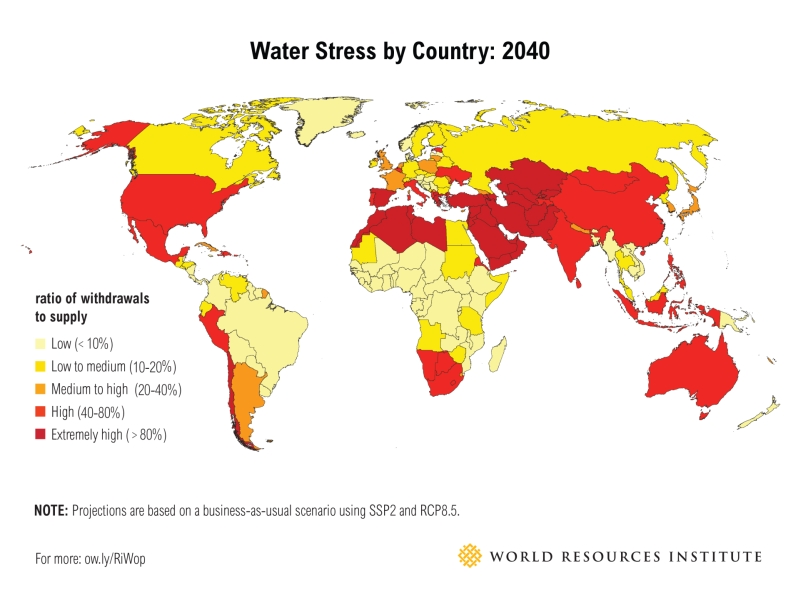
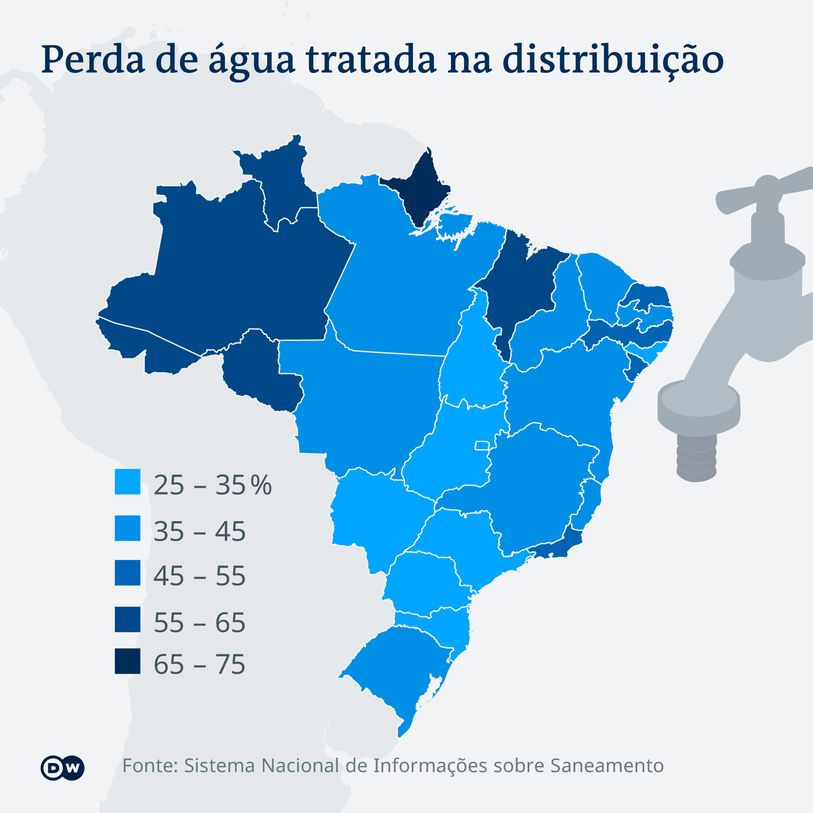
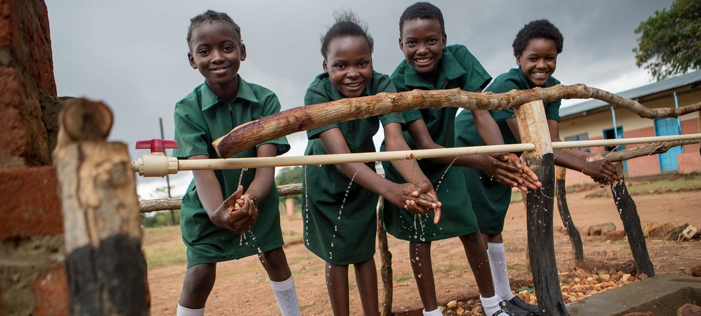

A falta de acesso a água potável e saneamento básico tem um impacto profundo na saúde, educação, economia e desenvolvimento das comunidades. É crucial investir em infraestrutura adequada e medidas de saneamento para melhorar a qualidade de vida e promover o desenvolvimento sustentável.



Importância da Água Potável e do Saneamento Básico
Problemas de saúde: A água contaminada é uma das principais fontes de doenças, como cólera, disenteria, hepatite A, febre tifoide e várias infecções parasitárias. Sem acesso a água potável segura, as pessoas correm o risco de contrair essas doenças, o que pode levar a complicações graves e até mesmo à morte, especialmente em crianças e idosos.
Mortalidade infantil: A falta de água potável e saneamento básico contribui significativamente para a mortalidade infantil em muitas partes do mundo. As crianças são particularmente vulneráveis a doenças transmitidas pela água, e a falta de acesso a instalações sanitárias adequadas também pode aumentar o risco de doenças respiratórias e desnutrição.
Impacto na educação: Em muitos lugares, especialmente em áreas rurais e comunidades carentes, as crianças passam muito tempo coletando água ou doentes devido à água contaminada. Isso pode resultar em falta de frequência escolar e comprometimento do desempenho acadêmico. Além disso, a falta de instalações sanitárias adequadas nas escolas pode afetar a saúde dos alunos e a qualidade do ambiente de aprendizado.
Impacto socioeconômico: A falta de acesso a água potável e saneamento básico pode criar um ciclo de pobreza. As pessoas gastam uma grande parte do seu tempo e recursos em busca de água limpa, o que reduz a produtividade econômica. Além disso, as doenças relacionadas à água podem levar a custos médicos significativos e
.jpg)